オーストラリア・内陸部復路
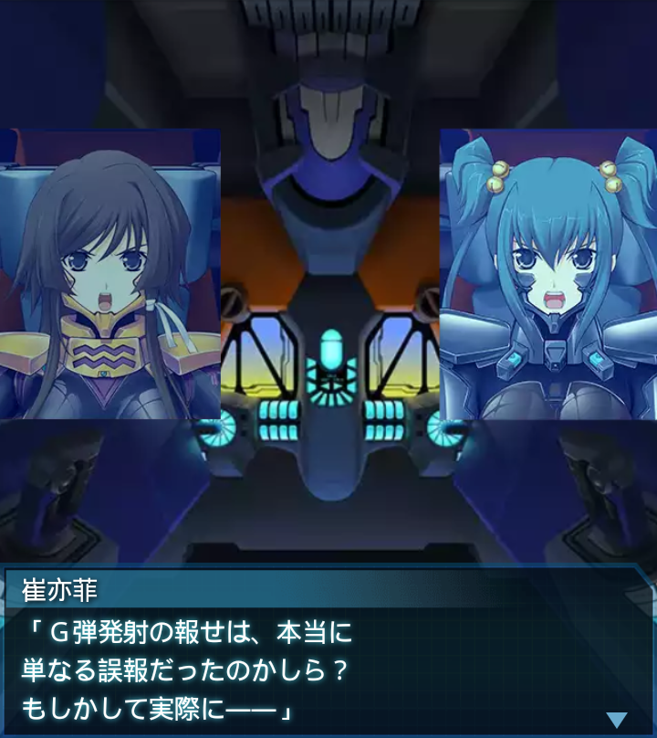
崔亦菲
「Ｇ弾発射の報せは、本当に
単なる誤報だったのかしら？
もしかして実際に――」
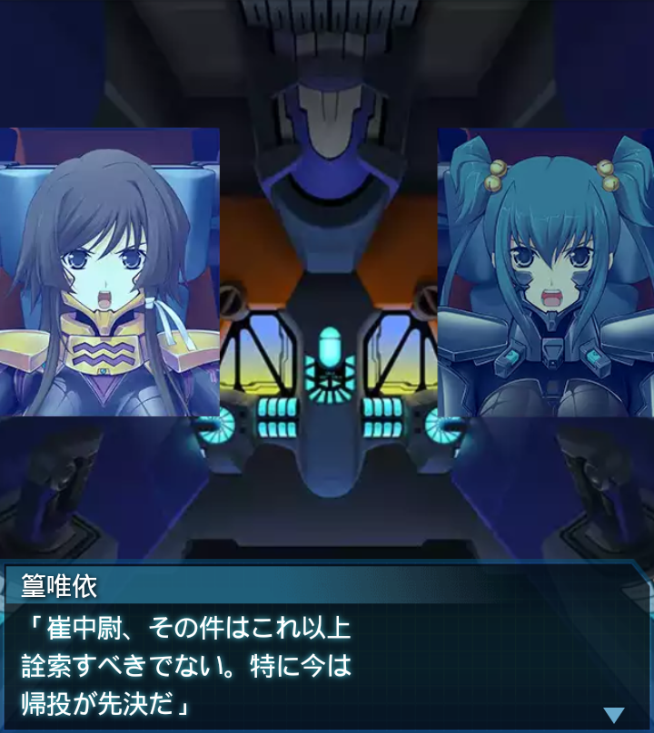
篁唯依
「崔中尉、その件はこれ以上
詮索すべきでない。特に今は
帰投が先決だ」

篁唯依
「残存ＢＥＴＡも相当数いる。
余計な事に気を取られていると
命を落とすぞ」
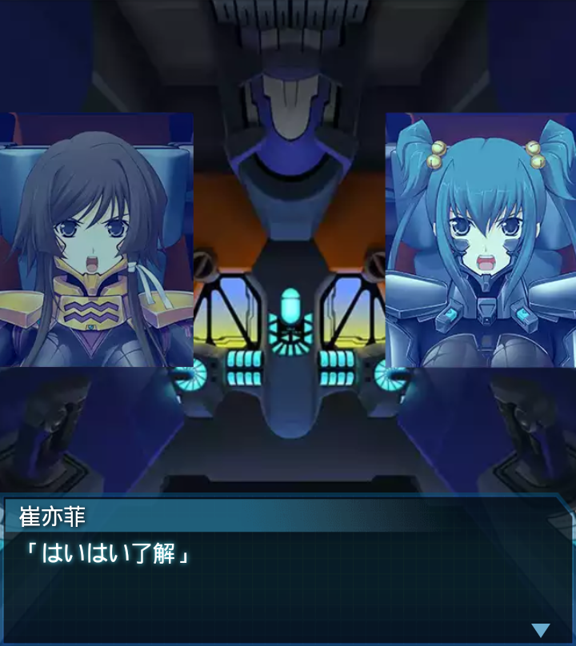
崔亦菲
「はいはい了解」
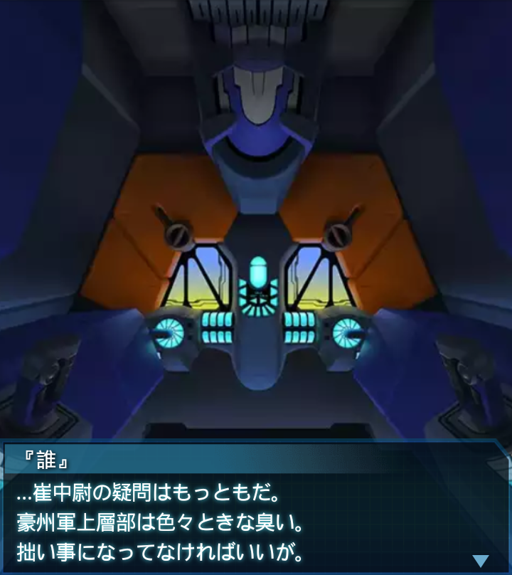
『誰』
…崔中尉の疑問はもっともだ。
豪州軍上層部は色々ときな臭い。
拙い事になってなければいいが。
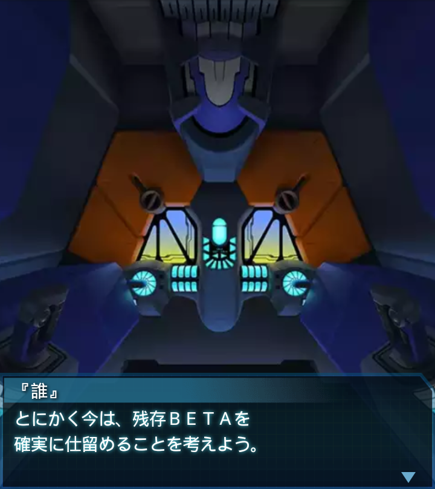
『誰』
とにかく今は、残存ＢＥＴＡを
確実に仕留めることを考えよう。
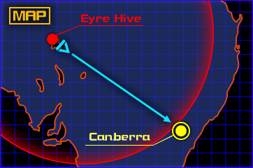
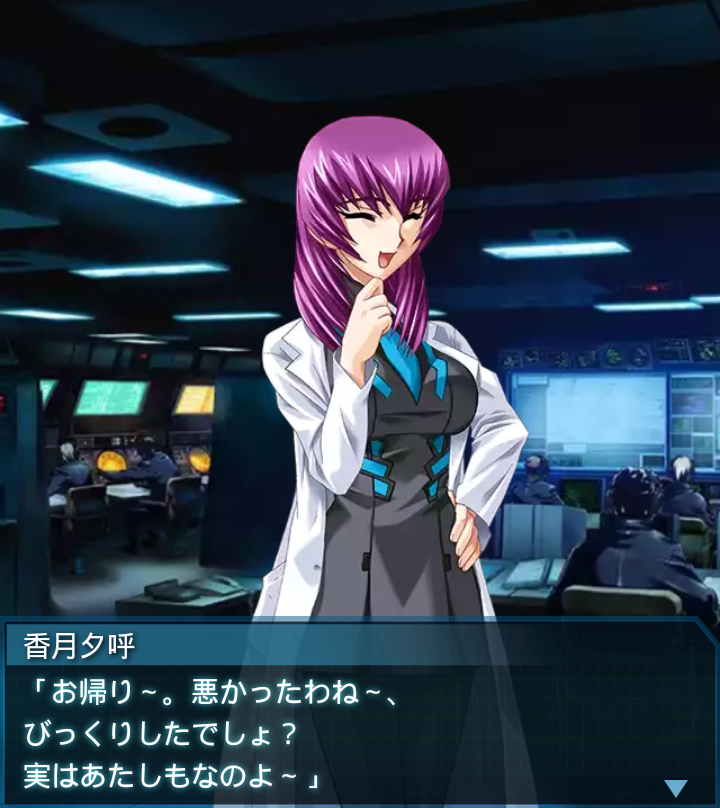
香月夕呼
「お帰り～。悪かったわね～、
びっくりしたでしょ？
実はあたしもなのよ～」
『誰』
「一体何が起きたんですか？
Ｇ弾発射は単なる誤報ですか？
それとも――」
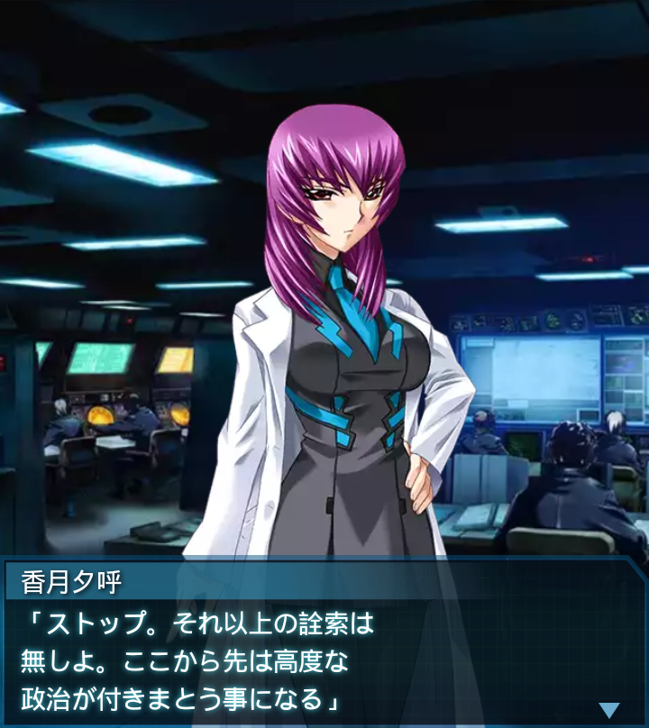
香月夕呼
「ストップ。それ以上の詮索は
無しよ。ここから先は高度な
政治が付きまとう事になる」
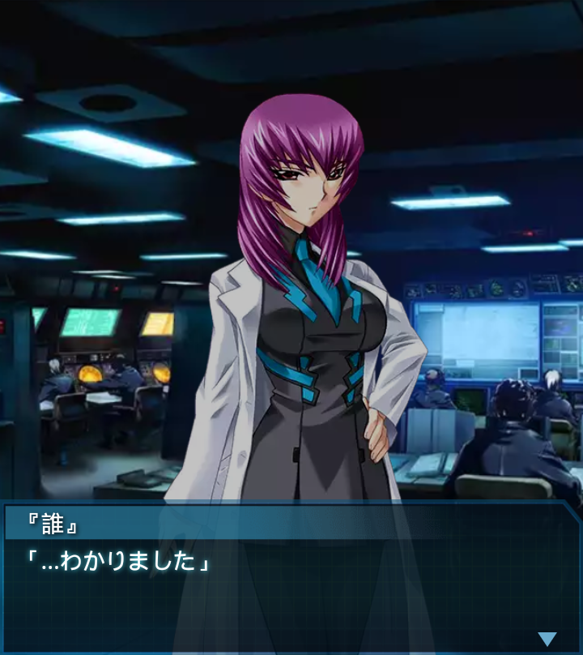
『誰』
「…わかりました」
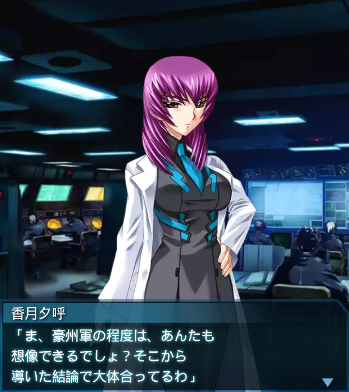
香月夕呼
「ま、豪州軍の程度は、あんたも
想像できるでしょ？そこから
導いた結論で大体合ってるわ」
香月夕呼
「でも彼等は初めからＧ弾を隠し
持っていた訳じゃなさそうね。
ある日突然そこにあった――」
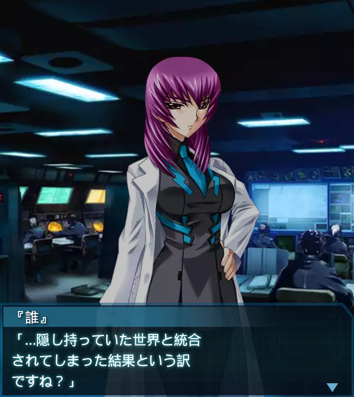
『誰』
「…隠し持っていた世界と統合
されてしまった結果という訳
ですね？」
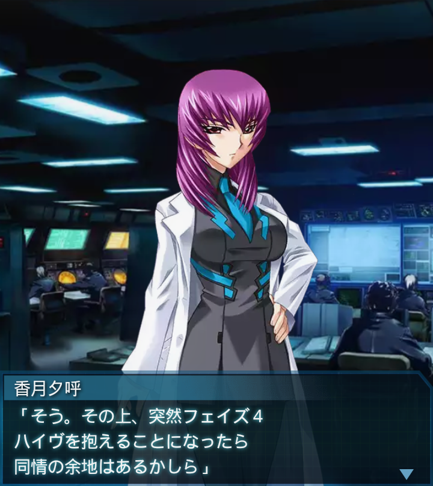
香月夕呼
「そう。その上、突然フェイズ４
ハイヴを抱えることになったら
同情の余地はあるかしら」
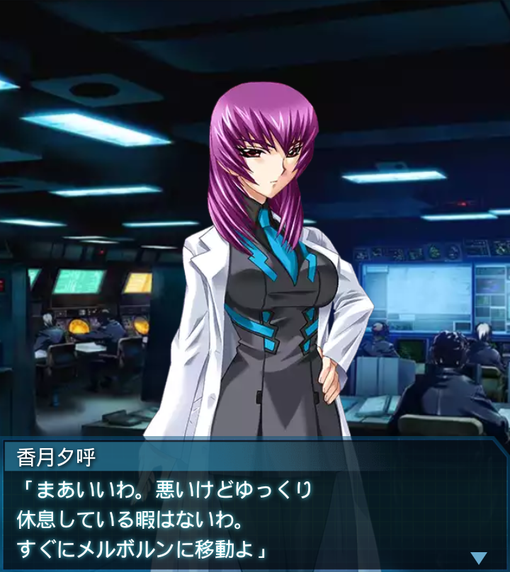
香月夕呼
「まあいいわ。悪いけどゆっくり
休息している暇はないわ。
すぐにメルボルンに移動よ」
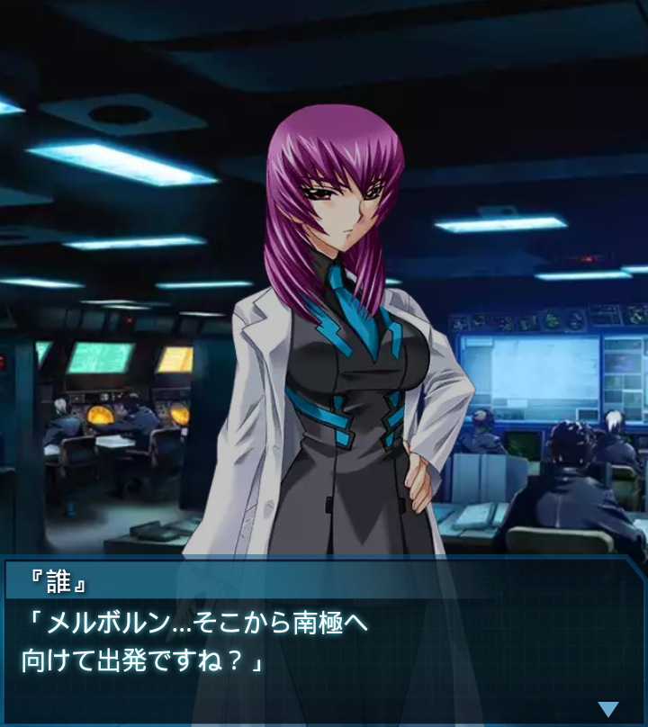
『誰』
「メルボルン…そこから南極へ
向けて出発ですね？」
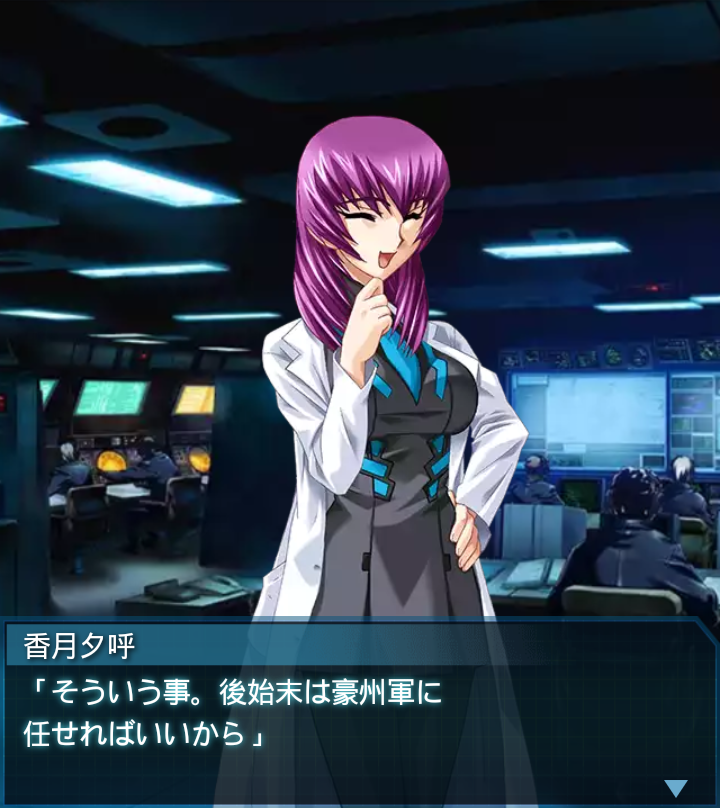
香月夕呼
「そういう事。後始末は豪州軍に
任せればいいから」
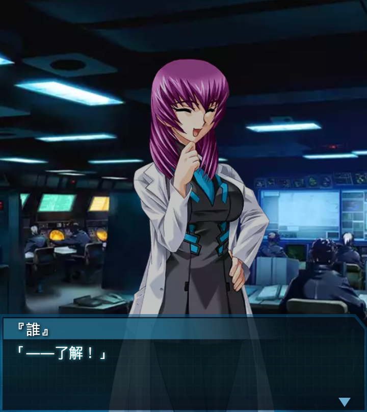
『誰』
「――了解！」